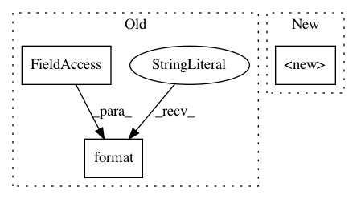

57abf6e86edbf1d9ff1448302d4c8bf970092a03,ffmpeg/nodes.py,Node,__init__,#Node#,183
Before Change
else:
if isinstance(first_arg, Node):
raise ValueError(
"{}.__init__() received an instance of {} as the first argument. If you want to create a "
"copy of an existing node, the types must match and you must provide an additional stream_spec."
.format(self.__class__.__name__, first_arg.__class__.__name__)
)
self.__init_fromscratch__(*args, **kwargs)
def stream(self, label=None, select=None):
After Change
self.__check_input_types(stream_map, incoming_stream_types)
incoming_edge_map = self.__get_incoming_edge_map(stream_map)
super(Node, self).__init__(incoming_edge_map, name, args, kwargs)
self.__outgoing_stream_type = outgoing_stream_type
self.__incoming_stream_types = incoming_stream_types
def stream(self, label=None, selector=None):
In pattern: SUPERPATTERN
Frequency: 3
Non-data size: 3
Instances
Project Name: kkroening/ffmpeg-python
Commit Name: 57abf6e86edbf1d9ff1448302d4c8bf970092a03
Time: 2018-03-11
Author: karlk@kralnet.us
File Name: ffmpeg/nodes.py
Class Name: Node
Method Name: __init__
Project Name: SheffieldML/GPy
Commit Name: 57d2f9857079c16c2ddc80399df9afb2dbdfb864
Time: 2015-10-10
Author: ibinbei@gmail.com
File Name: GPy/plotting/__init__.py
Class Name:
Method Name: change_plotting_library
Project Name: CSAILVision/semantic-segmentation-pytorch
Commit Name: 7c5ea376b885cac19f8f08d533254422dc5697d7
Time: 2019-02-23
Author: zhaohang0124@gmail.com
File Name: dataset.py
Class Name: TrainDataset
Method Name: __init__